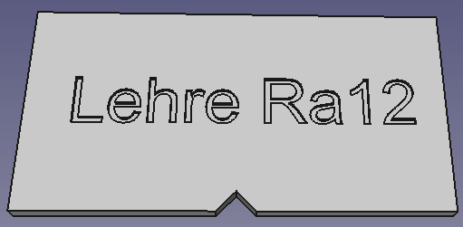

Krümelbahn
KrümelbahnIn 5 Schritten zum Straßenpfosten
An vielen Straßen sind sie zu sehen: Leit- bzw. Straßenpfosten zur Markierung des Fahrbahnrandes.Natürlich kann man diese kaufen - aber individuell hergestellte Pfosten erwecken die Aufmerksamkeit des Betrachters ... und sind zudem preisgünstiger in der Herstellung.
Also:
- man nehme einen Zahnstocher Ø ca. 2mm
- die obere Spitze mit einem scharfen Messer abschneiden
- mit einer Schleifscheibe in der Proxxon (dem Dremel o.ä.) das abgeschnittene Ende des Zahnstochers zuerst Planschleifen und anschließend anfasen
- den Zahnstocher weiß färben, z.B. mit Acrylfarbe
- am oberen weißen Ende mit schwarzer Farbe einen Ring anbringen (ca. 2mm breit, ca. 2mm vom oberen Ende entfernt)
Die fünf Schritte von links nach rechts:

Die Pfosten schauen ca. 12mm aus dem Boden hervor und werden ca. 5mm vom Straßenrand entfernt eingesetzt.
- Auf die gleiche Art und Weise können auch
- Grenzzeichen (Ra12) für die Positionierung im Weichenbereich hergestellt werden.
Für die genaue Positionierung der Grenzzeichen im Herzstückbereich gibt es eine Lehre:

- Isolierzeichen (Ra13) für die Kennzeichnung einer Gleisisolierung hergestellt werden...

Diese und weitere Anlagenausgestaltungen habe ich in
beschrieben.
Selbstbau von Straßenpfosten
Und wer sich den Selbstbau nicht zutraut:
Straßenpfosten
Preiser 18202
Noch 60511
Weichengrenzzeichen Ra12
Weinert 7225
SMF-Modelle 004 2322
Kuswa e2322
Isolierzeichen Ra13
SMF-Modelle 004 2324
(Die Auflistung erhebt keinen Anspruch auf Vollständigkeit).
Selbstbau von Straßenpfosten
Und wer sich den Selbstbau nicht zutraut:
Straßenpfosten
Preiser 18202
Noch 60511
Weichengrenzzeichen Ra12
Weinert 7225
SMF-Modelle 004 2322
Kuswa e2322
Isolierzeichen Ra13
SMF-Modelle 004 2324
(Die Auflistung erhebt keinen Anspruch auf Vollständigkeit).